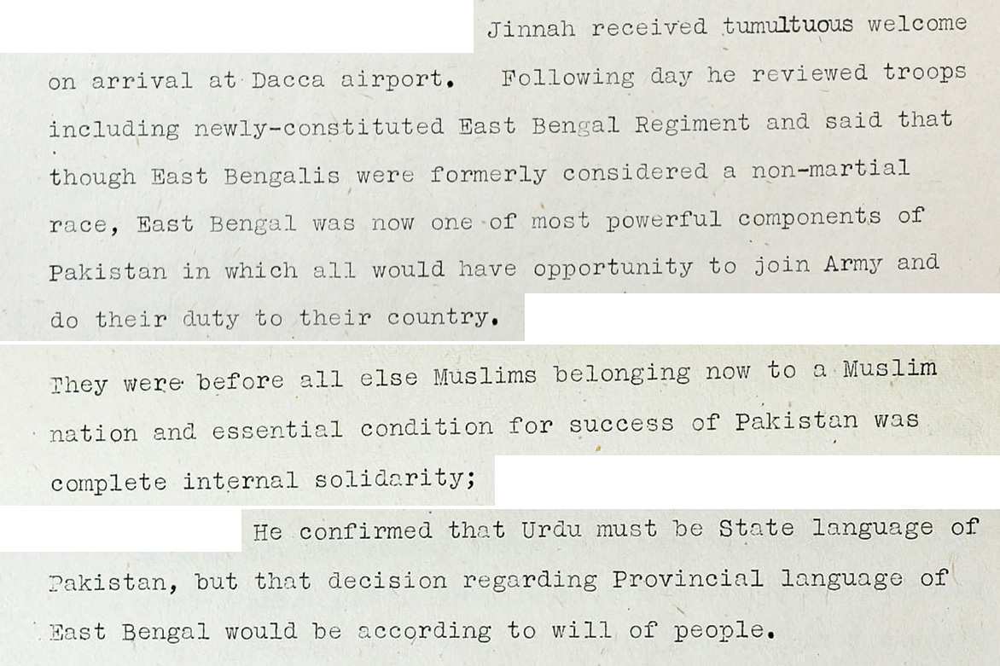

Historical Catalog
This catalog provides access to newspapers, reports, and archival materials related to the Bangladesh Liberation War of 1971. These documents preserve the voices, events, and perspectives that shaped the birth of Bangladesh.
Browse by Category
Documents by Type
Explore historical sources such as government reports, newspaper articles, and international records documenting the Liberation War.
Documents by Date
Browse documents based on key historical periods leading to the independence of Bangladesh.
Documents by Relevance
Explore some of the most influential documents that played a significant role in shaping Bangladesh’s independence.
The Bengali Language Movement, 1950s
In 1948, the government of Pakistan declared Urdu as the only state language of the country. This decision caused strong protests in East Pakistan where the majority of people spoke Bengali. Students and intellectuals began a movement demanding that Bengali be recognized as a state language. The movement reached its peak on 21 February 1952 when several students were killed during protests in Dhaka. Their sacrifice later led to Bengali being recognized as one of the state languages.

Escalating Tensions, 1970-71
The political tensions between East and West Pakistan intensified after the 1970 general election. The Awami League, led by Sheikh Mujibur Rahman, won the majority of seats but was not allowed to form the government. This led to mass protests across East Pakistan. On 7 March 1971, Sheikh Mujibur Rahman delivered his historic speech calling for resistance and preparation for independence.
International Reactions, 1971
The conflict in East Pakistan attracted international attention. Media outlets, humanitarian organizations, and activists in many countries highlighted the humanitarian crisis and the struggle of the Bengali people. Public demonstrations were organized in cities such as London, calling for recognition of Bangladesh.